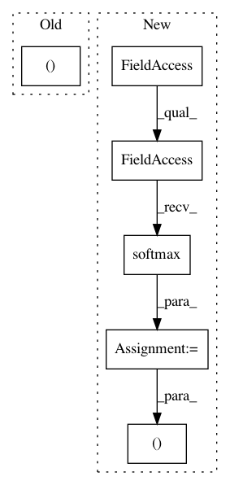

636c1cff7a91c0b54c996ef48b36274b08e4a8b8,models.py,YOLOLayer,forward,#YOLOLayer#Any#Any#Any#,110
Before Change
xy = torch.sigmoid(p[..., 0:2]) + grid_xy // x, y
wh = torch.exp(p[..., 2:4]) * anchor_wh // width, height
p_conf = torch.sigmoid(p[..., 4:5]) // Conf
p_cls = p[..., 5:5 + self.nc]
// Broadcasting only supported on first dimension in CoreML. See onnx-coreml/_operators.py
// p_cls = F.softmax(p_cls, 2) * p_conf // SSD-like conf
p_cls = torch.exp(p_cls).permute((2, 1, 0))
After Change
xy = torch.sigmoid(p[..., 0:2]) + grid_xy[0] // x, y
wh = torch.exp(p[..., 2:4]) * anchor_wh[0] // width, height
p_conf = torch.sigmoid(p[:, 4:5]) // Conf
p_cls = F.softmax(p[:, 5:85], 1) * p_conf // SSD-like conf
return torch.cat((xy / ngu[0], wh, p_conf, p_cls), 1).t()
// p = p.view(1, -1, 5 + self.nc)
// xy = torch.sigmoid(p[..., 0:2]) + grid_xy // x, y
In pattern: SUPERPATTERN
Frequency: 3
Non-data size: 6
Instances
Project Name: ultralytics/yolov3
Commit Name: 636c1cff7a91c0b54c996ef48b36274b08e4a8b8
Time: 2019-08-11
Author: glenn.jocher@ultralytics.com
File Name: models.py
Class Name: YOLOLayer
Method Name: forward
Project Name: pyprob/pyprob
Commit Name: 9da14aeaa19cd8cf3fa72e740892f433859e522a
Time: 2017-06-01
Author: atilimgunes.baydin@gmail.com
File Name: infcomp/modules.py
Class Name: ProposalDiscrete
Method Name: forward
Project Name: pyprob/pyprob
Commit Name: 9da14aeaa19cd8cf3fa72e740892f433859e522a
Time: 2017-06-01
Author: atilimgunes.baydin@gmail.com
File Name: infcomp/modules.py
Class Name: ProposalUniformDiscrete
Method Name: forward